文艺复兴-代表人物
达芬奇（1452-1519，67）[知名度最高]
米开朗基罗（1475-1564，88）[文艺复兴雕塑第一人]
拉斐尔（1483-1520，37）[古代绘画第一人]
达芬奇其实在绘画上，并没有下多大的功夫，确认是他的画少于20幅。
他的画作巅峰《最后的晚餐》
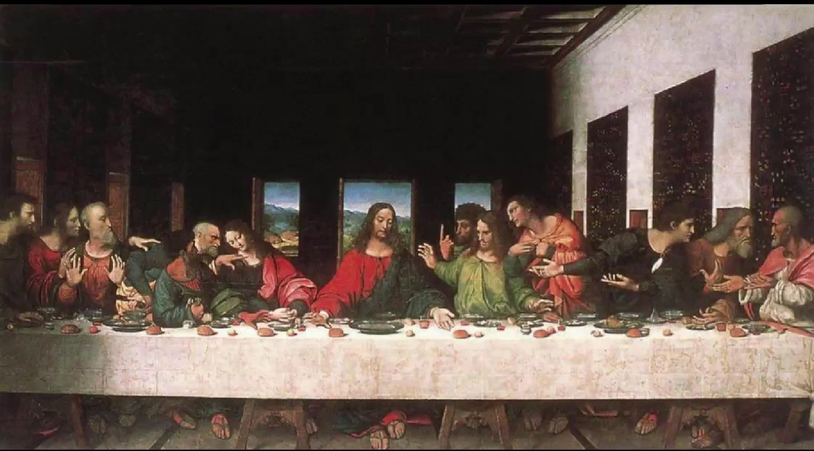
他最有争议的，故事性最强的画《蒙娜丽莎》（卢浮宫镇馆三宝之一）。
《蒙娜丽莎》先被一个小职员偷窃，后又因为画作是否归属法国，引起全世界范围内的讨论。
因为达芬奇是意大利人，职员认为这幅画应该归还给意大利政府。
其实达芬奇晚年，受法国弗朗索瓦一世的邀请，去了法国。由于达芬奇一直把它带在身边，索性法国国王就买下了这幅画。这两人的私交特别好。
安格尔还为达芬奇和弗朗索瓦一世画了一幅画《达芬奇之死》，gay里gay气的。
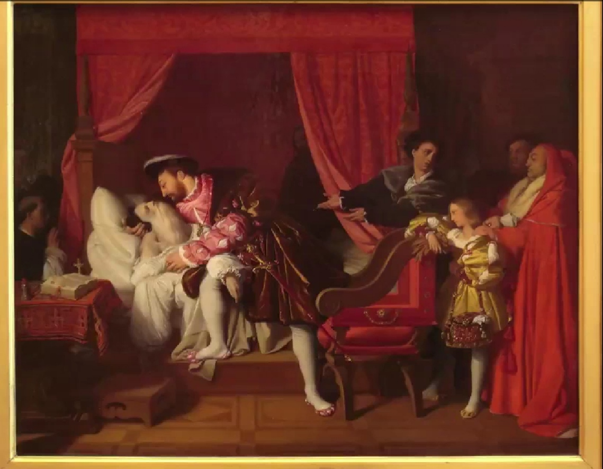
达芬奇的画法
- 透视法：空气透视，焦点透视
空气透视，也叫背景虚化。比如蒙娜丽莎背后的景，朦朦胧胧地。
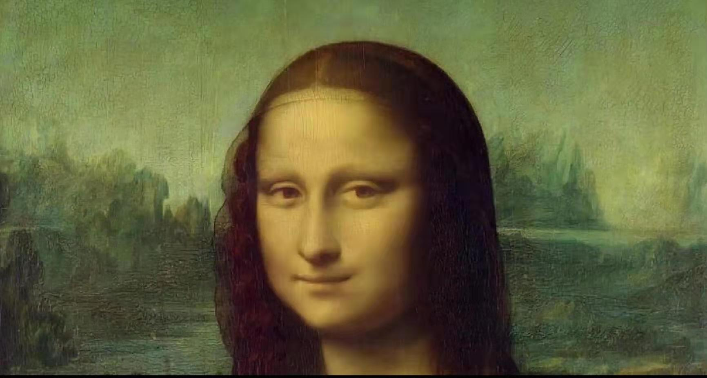
焦点透视，最后的晚餐
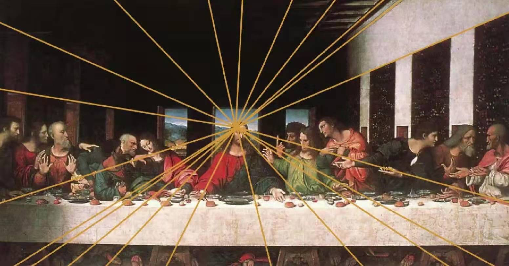
- 明暗法：有阴影，以此达到三维的视觉效果
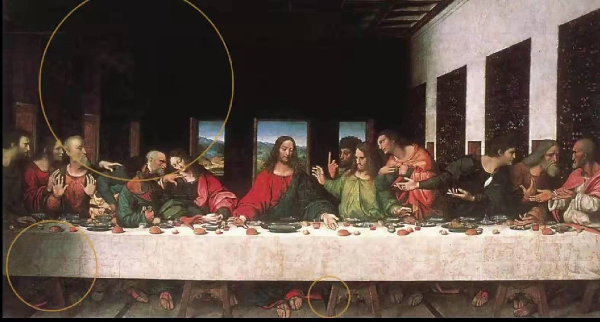
- 晕涂法：（sfumato,-fume烟雾）达芬奇独创的绘法。这种画法的特点，在画中间色调和反光部位时，特别注意过渡，在明暗交界处，几乎看不到交界线，尤其在人的脸部和人体的转折处，画的十分柔和，圆润，用色很薄暗部更是干净透明。
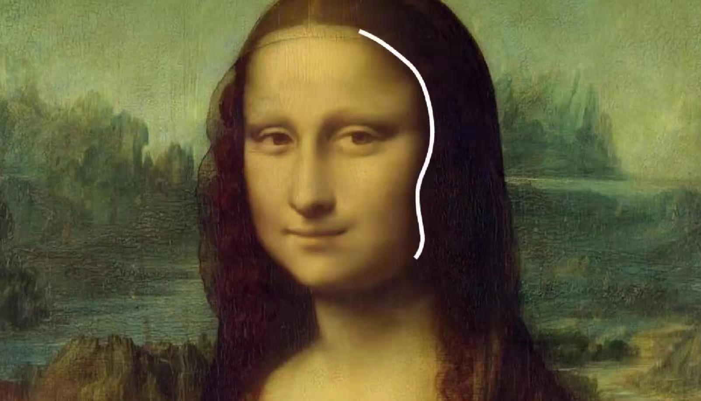
不仅如此，它对嘴角的处理，也是同样的方法。这种嘴角的处理，会让人有种神秘，诡异的感觉。又似乎带些暧昧，皮笑肉不笑的。
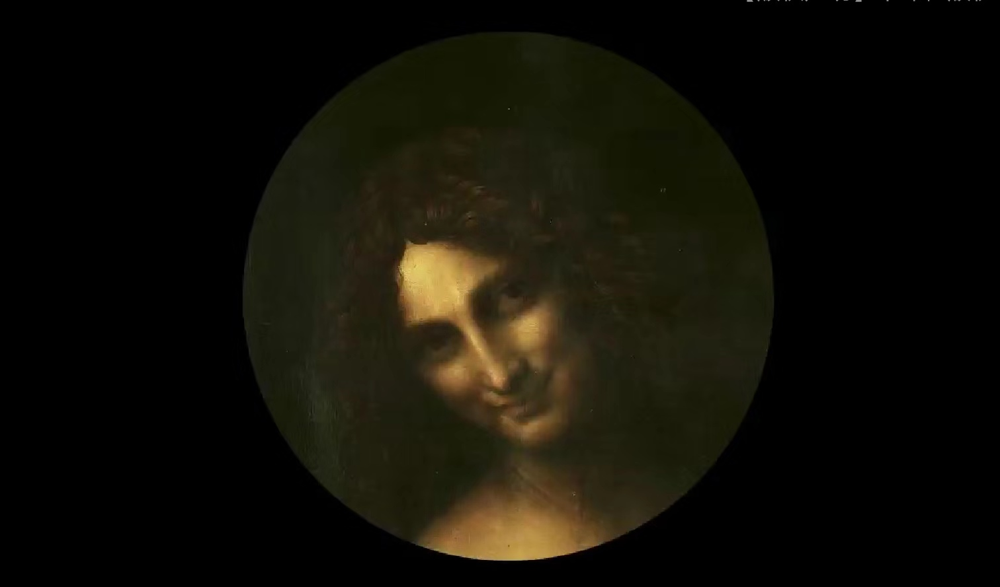
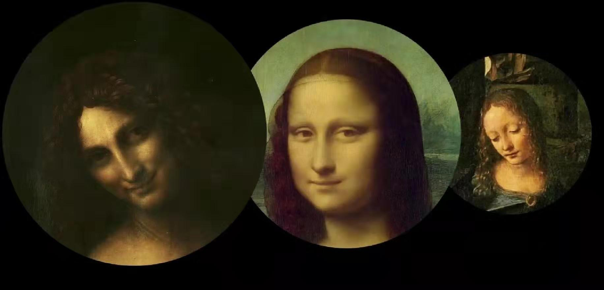
达芬奇的构图
《岩间圣母》，使用三角构图，得到稳定的空间
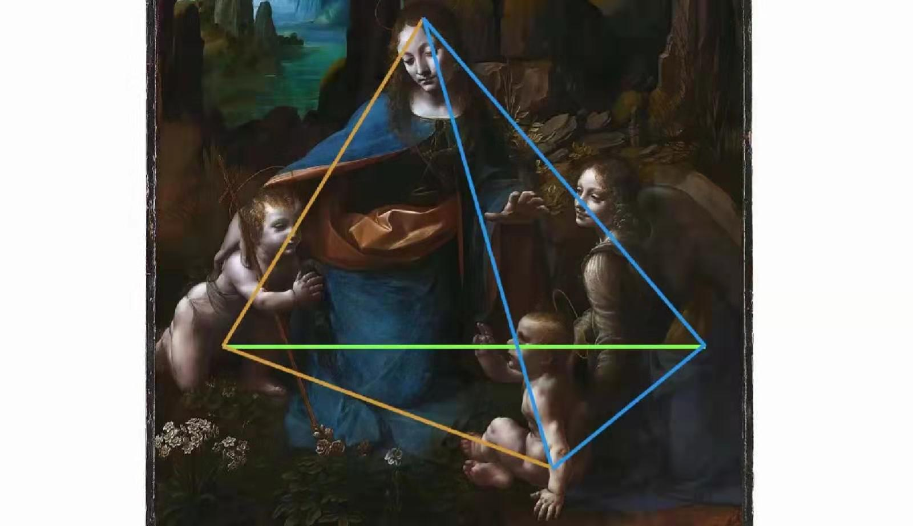
眼睛跟着光走，就能找到图结构
《圣母领报》，早期作品，视线慢慢飘向远方。
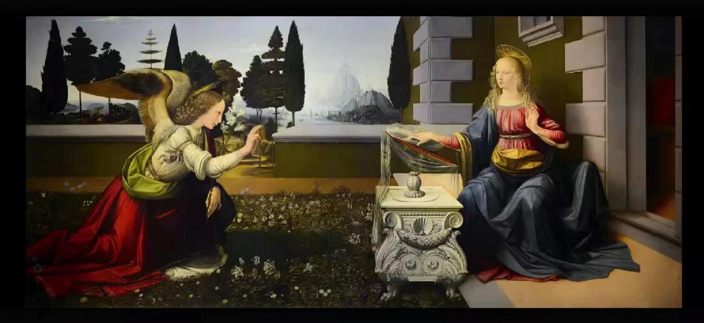
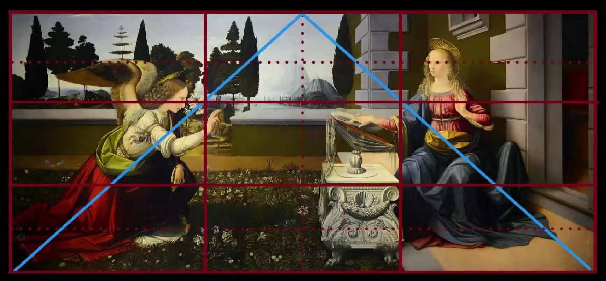
达芬奇笔下人物特点
其实是有些男女不分的，比如施洗者约翰，人家本来是男的，但画出了阴柔。
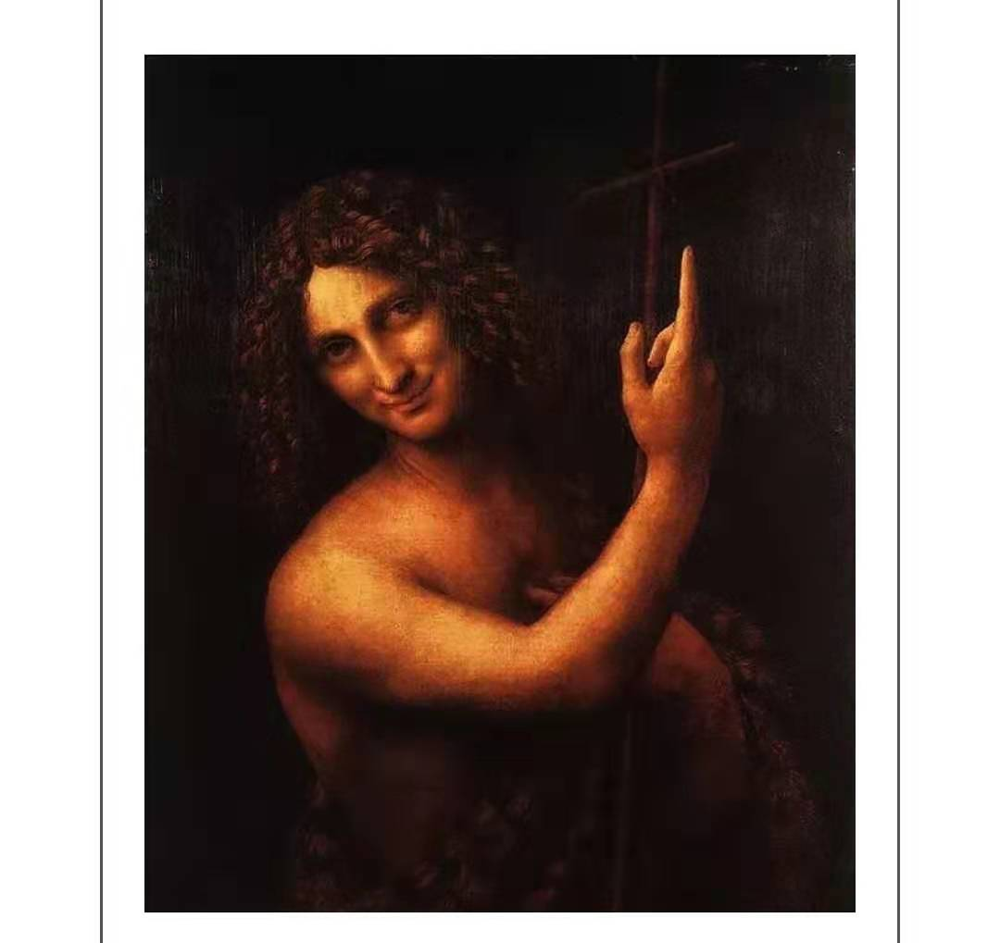
他的岩间圣母，与拉斐尔的圣母比较，画面真的非常唯美，可见有颗唯美，傲娇的小粉红的内心。对比拉斐尔的圣母，那真是母性的光辉都快从画中溢出来了，只有对女性真正的热爱，才能画出来。
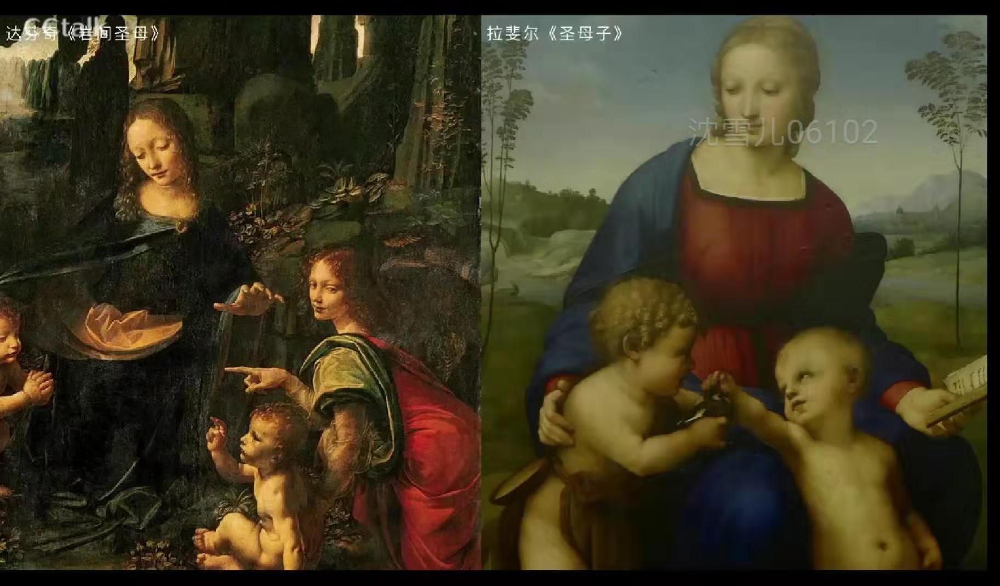
大伙都猜他有点gay,但没有真凭实据，这样理解不失为一种看画的新角度。
补充
《圣母领报》在意大利佛罗伦萨乌菲兹美术博物馆
《施洗者约翰》：约翰是耶稣的施洗人，鉴于耶稣的崇高地位，约翰也被后人称为‘施洗者约翰’，或‘圣约翰’。
从中世纪到文艺复兴，所创造出的技法，是从二维的平面到三维空间的过度。